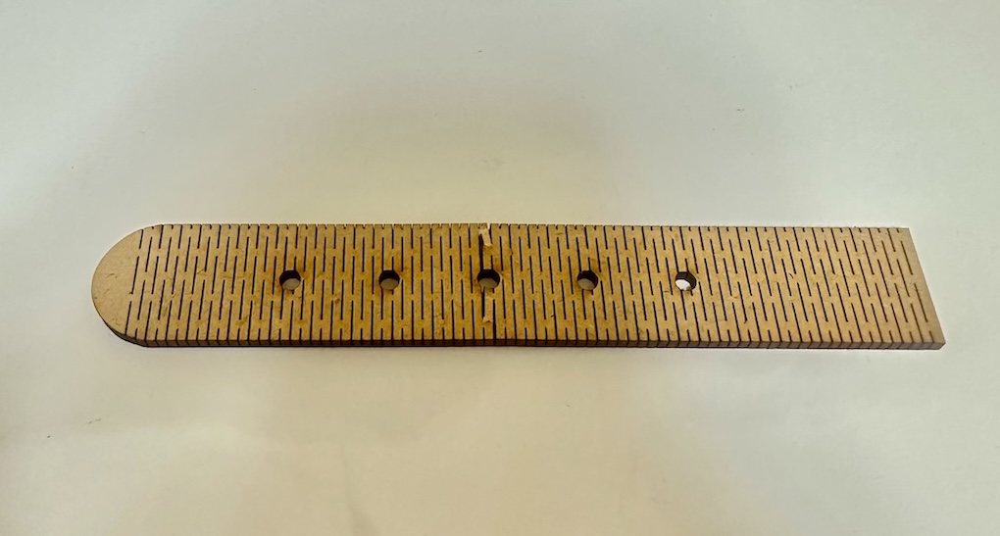
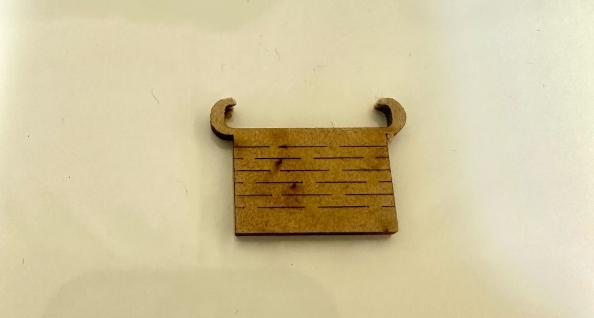
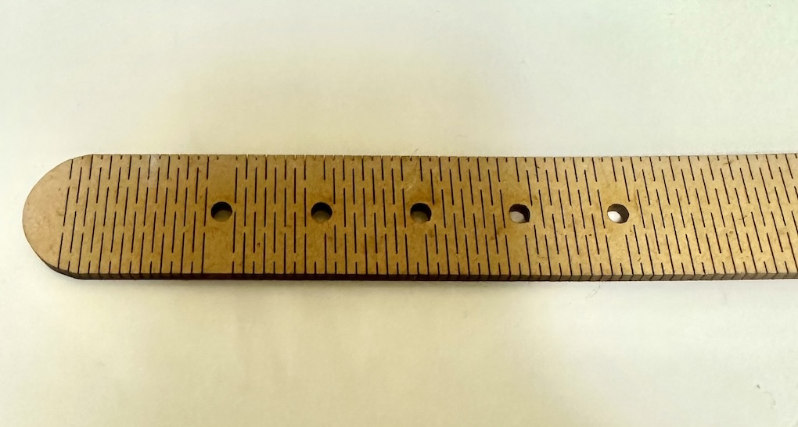
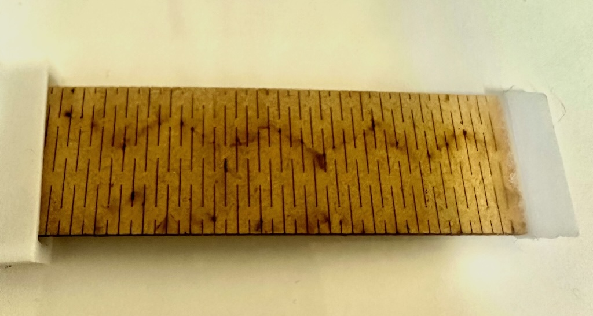
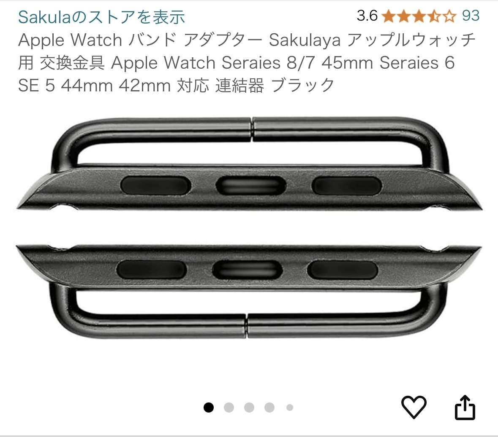
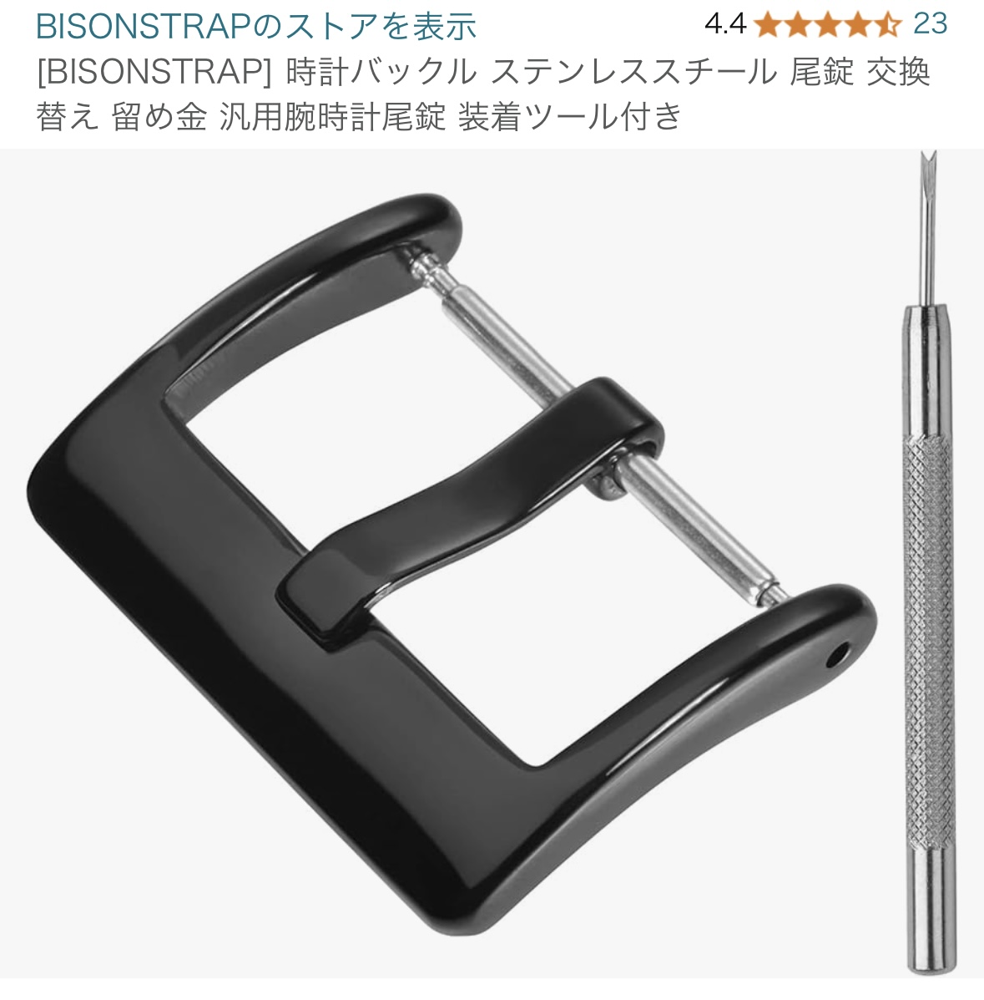
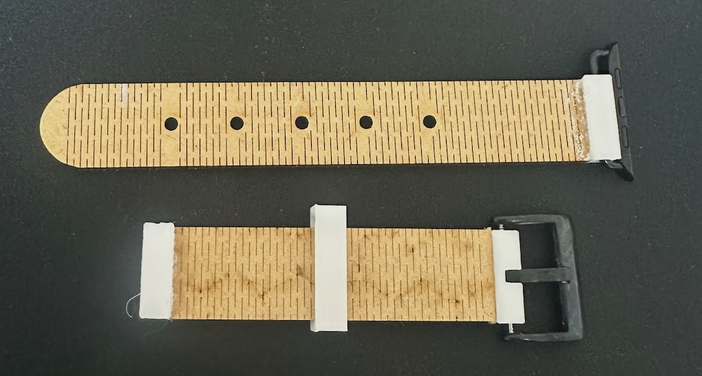
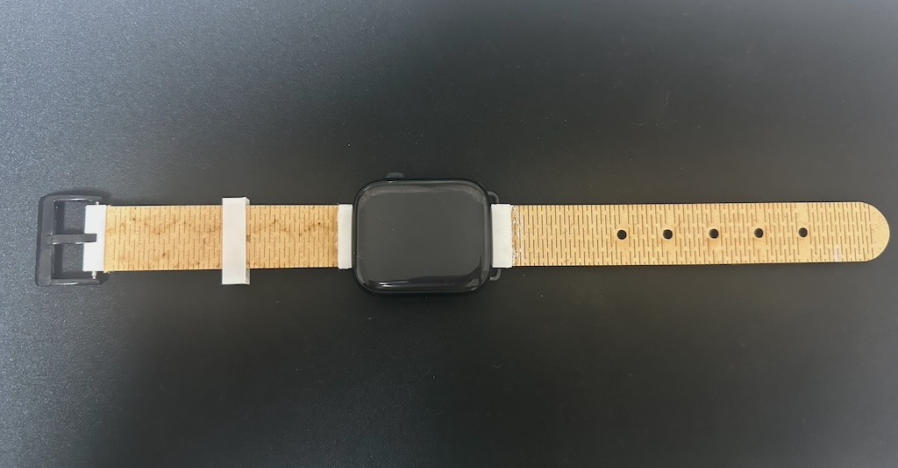
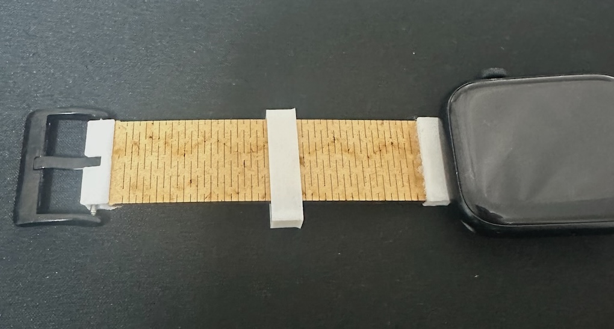
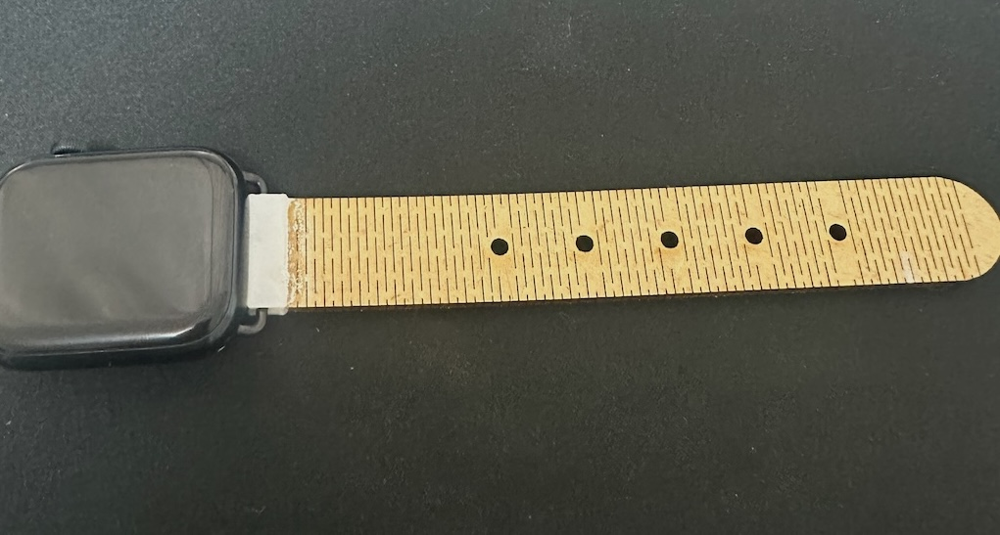

Computer-controlled-Cutting
はじめの一歩
Computer-controlled Cuttingがよくわからないまま始まった今回の課題。 テーマが自由すぎて前回の3DPrintingよりも難しかった。時間をかけて考えた結果閃いたのが、Apple Watchのバンドを作ることである。 素材は厚さ2.5mmのMDFボード、3Dプリンター、市販の金具を使用した。使用ソフトはFusion360。
Fusionと曲げ加工
早速Fusionを起動してスケッチを始めたのだが、ある問題が発生した。 腕に巻くということは、曲げ加工をしなければならない。 しかしYouTubeなどで調べても設定などが複雑なものばかりだった。そこでさらに調べてみると、曲げ加工用のPDFデータがネットに公開されていた。 このデータをFusionのキャンバスに設定し、なぞっていくことにした。以下の画像が実際のスケッチである。


レーザーカット/試行錯誤
山場であるスケッチを終え、いざレーザーカッターで出力してみた。その結果が以下の画像である。


左：形は綺麗に出たものの、何回か曲げたら避けてしまった。
右：形は綺麗だが、バンドの留め具の部分が切れてしまった。
MDFの強度を確認するには十分であった。ここからは調整をしていく。
左側のパーツは穴の近くから避けてしまったため、Illustratorで穴の近くにはカット線を入れないようにした。 そして右側は、幸い綺麗な形のまま裂けてしまったので切れ端をそのまま使うことにした。以下の画像は調整後のものである。


左側：しっかり曲がる上に強度も増した。
右側：切れ端から作ったとは思えない完成度。
バンド部分はこれで完成。
Apple Watchと連結
バンドの部分は完成したが、これをどうやってApple Watchと連結するかが問題である。 Amazonで何か使えるものがないか調べたところ以下のようなものを見つけた。


この部品と3Dモデルを組み合わせればうまくいくような気がした。早速注文し、連結に足りないパーツを3Dプリンターで製作した。 Fusionで見ると以下のようなモデルである。


そしてこのパーツをバンド部分と連結する。以下の画像のようになった。

手作り感は否めないが、時計のバンドっぽくなった。そして、最終的に完成したものが以下の通りである。



完成度の高さに自分でびっくりした。見た目は手作り感満載で少し不格好だが、しっかり腕に巻くこともできて実用性もある。 期限内に形にすることができて安心した。
おわりに
使用したデータ、商品のリンク、作成したデータを置いておく。
・曲げ加工のPDFをダウンロードしたサイトはここ
・Apple Watchと連結する部品はこれ
・腕時計用のバックル（？）はこれ
・バンド１（余計な部分がついているが問題なし）
・バンド２
・連結部１
・連結部２